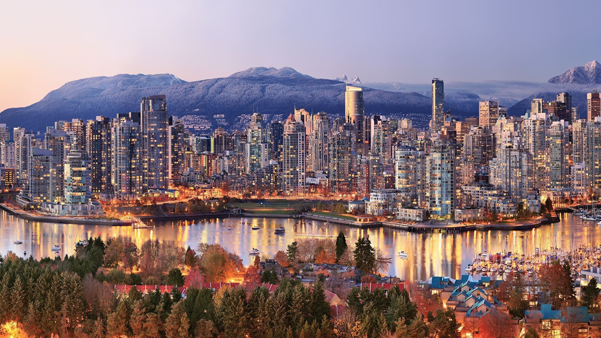
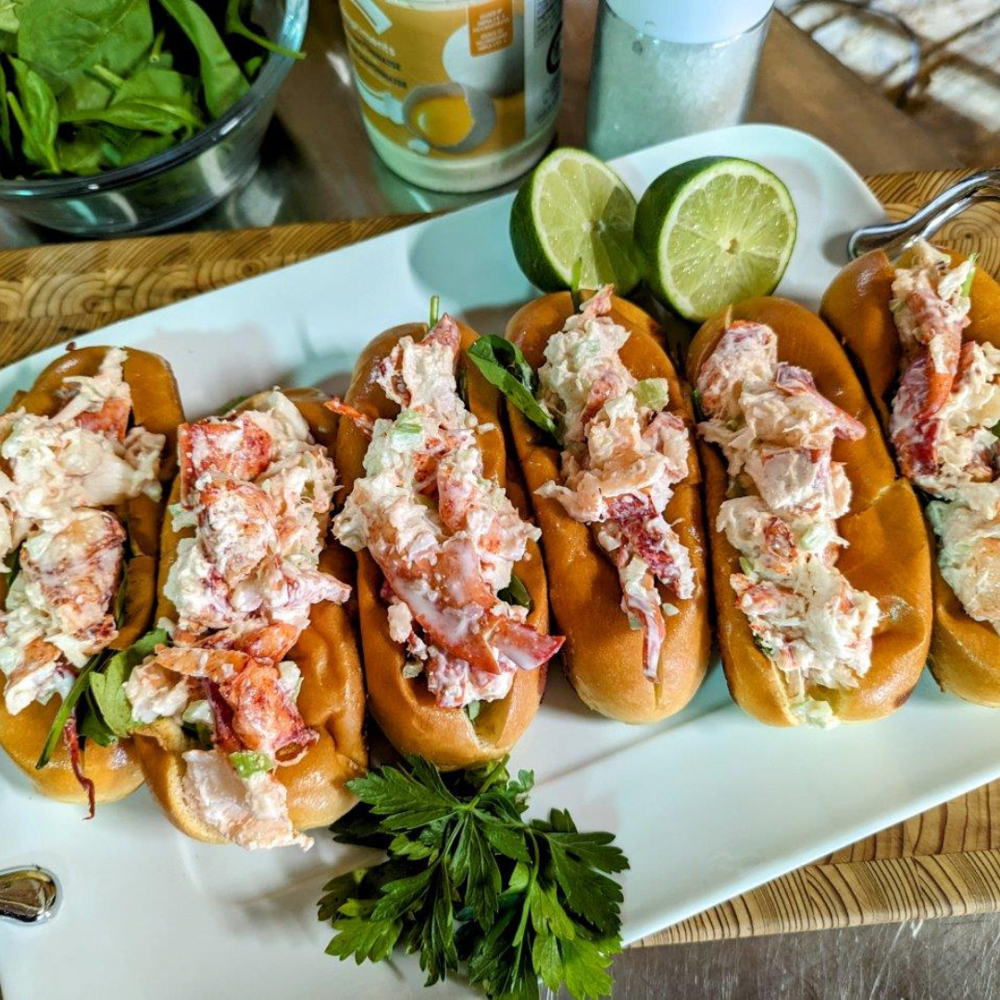

Canadá
Canadá
Um país de natureza, cultura e diversidade
O Canadá é o segundo maior país do mundo e está localizado na América do Norte. Conhecido por suas paisagens naturais impressionantes, o país mistura cidades modernas, qualidade de vida elevada e uma forte valorização da multiculturalidade.
Além de seus famosos lagos, montanhas e florestas, o Canadá também se destaca pela segurança, educação de qualidade e pelo respeito à natureza.
Curiosidade
O Canadá possui cerca de 20% da água doce do planeta.

Principais Pontos Turisticos do Canadá

Lago Esmeralda
Localizado em Alberta, é famoso por suas águas verdes cristalinas.

Cataratas do Niágara
Uma das quedas d’água mais famosas do mundo, na fronteira com os EUA.

Cidade Toronto
Toronto é um centro internacional de negócios, finanças, artes, esportes e cultura, e é reconhecido como uma das cidades mais multiculturais e cosmopolitas do mundo.
Curiosidades Sobre o Canadá
🍁 Maior produtor de maple syrup
O Canadá produz cerca de 70% do maple syrup consumido no mundo.
❄ Mais lagos do planeta
O país possui mais lagos do que todos os outros países juntos.
🏒 Hockey é paixão nacional
O hockey no gelo é um dos esportes mais populares do Canadá.
Cultura e Sabores Canadenses
O Canadá possui uma cultura rica e multicultural, influenciada por tradições indígenas, francesas e britânicas.
Sua culinária é conhecida por pratos típicos como poutine, maple syrup e beaver tails.
Explorar culinária